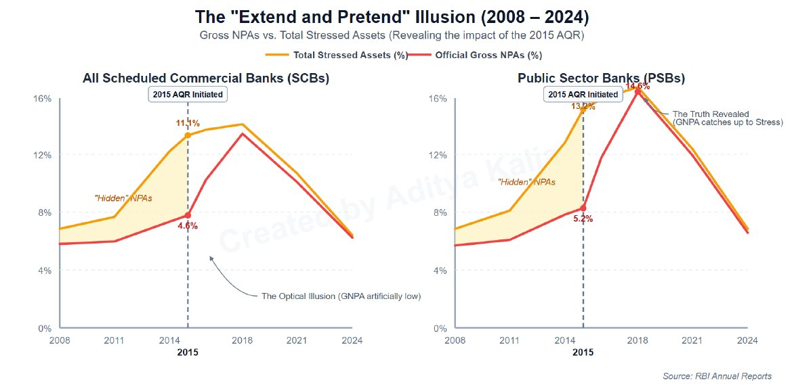
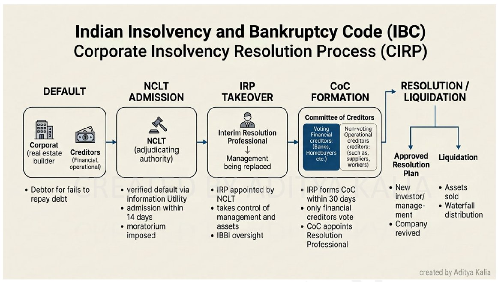

Chapter 6 ends by saying inflation control needs expensive money; banks transmit the cost of money.
Economy · GS Foundation · Chapter 7
Banking and NBFCs: Regulation, NPAs, IBC and Financial Inclusion
Handout only: no class slidesHandout pages 1-33No PYQs quoted
Why banks are regulated, Basel norms and capital, provisioning and CRAR, SMA and NPA classes, the 4R strategy (AQR, RDDB, SARFAESI, IBC, recapitalisation, reforms), financial inclusion from 1955 to Jan Dhan, priority sector lending, types of banks and the NBFC framework.
Chapter map#
- Banking and NBFCs
Regulation
- Decision-making vs facilitating RBI vs SEBI
- BR Act 1949, RBI Act 1934
- Basel III: BCBS at BIS
Capital
- Tier 1 vs Tier 2
- CRAR 9%, CCB 2.5%
- Provisioning + 9% of RWA
- Credit, operational, market risk
Bad loans
- SMA-0/1/2 then NPA at 90+
- Sub-standard, doubtful, loss
- GNPA, Net NPA, PCR
- Evergreening, haircut, write-off
Why NPAs
- Wilful default
- Economic reasons
- Poor risk assessment in PSBs
- DFR and TBP
4R
- Recognise: AQR 2015, CRILC
- Recover: RDDB, SARFAESI, IBC
- Recapitalise: ₹2.11 L Cr bonds, 2017
- Reform: BBB, FSIB, BHC
IBC
- NCLT, IRP, CoC
- 2/3 vote, 180 + 90
- IBBI, IU (NeSL)
- PPIRP, homebuyers, cross-border
Inclusion
- SBI 1955, nationalisation 1969, 1980
- RRB 50:15:35
- Lead bank, BSBDA, BCs
- Jan Dhan 2014
Entities
- PSL 40% / 75%
- SFB, payments bank
- NBFC 4 layers
- Nidhi, chit funds
Exam lens: priority and PYQs#
What the handout stresses
| Signal in the handout | Where | Why it matters |
|---|---|---|
| Banks are decision-taking intermediaries; regulation makes the bank, not the depositor, bear lending risk. RBI is the key regulator (SEBI for decision-facilitating ones) | Sections 1-2 | The logic of the whole chapter |
| CRAR ≥ 9% (Basel 8%), CCB 2.5%, Tier 1 versus Tier 2, three risks (credit, operational, market) | Section 3 | Numbers and a worked example |
| SMA-0/1/2 (introduced 2014), NPA at 90+ days, sub-standard, doubtful, loss; provisioning ~15%, 25-100%, 100% | Section 4 | Classification ladder |
| 4R: Recognise, Recover, Recapitalise, Reform. AQR 2013 proposed, from 2015; ₹2.11 lakh crore recap bonds in Oct 2017 | Section 6 | Dates and amounts |
| SARFAESI 2002 exclusions; IBC 2016 creditor-in-control; CoC, 2/3 vote, 180 + 90 days (330 now) | Section 6 | Statutory detail |
| Financial inclusion timeline: 1955, 1969, 1975, 1980, 1992, 2005, 2006, 2011, Aug 2014 PMJDY, 2015 | Section 7 | The handout’s own “Quick Reference” |
| PSL: 40% of ANBC; 75% for RRBs, co-operative banks, SFBs | Section 8 | Number trap |
| Payments bank cannot lend; SFB 75% PSL; NBFC 4-layer SBR (2022) | Section 9 | Differentiated entities |
1 · Capital markets and intermediaries#
Capital markets are the markets of money. Money is exchanged for a promise, a contract (Indian Contracts Act, 1872: an agreement enforceable in a court of law). Two broad types:
Debt versus equity contracts
| Debt | Equity | |
|---|---|---|
| Meaning | Money given is to be repaid, generally with interest in a promised period | Money is not paid back; the supplier gets rights (decisions, appointments, partial ownership of assets and incomes) |
| Examples | Bank loans, bonds | Shares |
Intermediaries collect and spread information, improve trust and give convenience (creating, standardising and registering contracts), for a fee.
Two kinds of intermediary
| Decision-making | Decision-facilitating | |
|---|---|---|
| Examples | Banks and NBFCs | Brokers, stock exchanges |
| Who decides about the money | The intermediary, not the supplier | The decision-makers (demander and supplier) themselves |
| Risk | The intermediary bears (or should bear) the risk, so it takes most of the reward | Borne by the decision-makers |
| Regulation aims at | Making sure the supplier’s money is not put at risk; RBI is the key regulator | Being truthful, transparent and non-partisan; SEBI is the key regulator |
This unit therefore has two parts: banks and NBFCs, and capital (stock) markets (the next chapter).
2 · Banking and its regulation#
A bank’s business is “heads I win, tails you lose”: the bank keeps the interest while the depositor’s money is at risk. That violates a fair transaction, so the bank must have skin in the game. A healthy banking system attracts deposits and keeps credit (“the lifeline of any economy”) flowing.
- Key laws: Indian Contracts Act 1872; Negotiable Instruments Act 1881; RBI Act 1934; Banking Regulation (BR) Act 1949 (the key act, makes RBI the regulator); Companies Act 1956/2013.
- BR Act, section 5: “banking” = accepting deposits from the public for lending or investment, repayable on demand or otherwise, withdrawable by cheque, draft, order or otherwise. A banking company needs an RBI licence; only licensed entities may use the word “bank”.
- Regulations cover: depositor protection; reserve ratios; declarations on loans, stress and capital; senior appointments; Board independence from shareholders; promoters’ minimum capital; regular RBI audits.
CRR and SLR are deposit-side regulations. Lending-side rules are also needed, in two forms: recognition of risks and preparation for them. The bank itself will not recognise risk honestly, so the central bank must do it.
3 · Basel norms, capital, provisioning and CRAR#
To avoid compliance burden and regulatory arbitrage (registering where rules are weakest), central banks coordinate through the BIS (Bank of International Settlements, Basel, Switzerland) and its BCBS (Basel Committee on Banking Supervision), which issues prudential (Basel) norms. The current norms are Basel III (2008) per the handout.
The three risks Basel III recognises
| Risk | Meaning | Affects |
|---|---|---|
| Credit risk | Risk of a particular loan: borrower’s or sector’s | One loan |
| Operational risk | IT hacking, key employees resigning, a strike | All loans equally |
| Market risk | External factors: wars, oil spikes, disasters, failure of other banks | The entire balance sheet |
What “capital” means for a bank
Capital is the business’s own money, over which it has a high degree of control. A firm raises it through equity and debt (both are liabilities for the firm and assets for the holder). Deposits are not capital: the depositor gives money for safety, with limited consent to lend it. Deposits are pure liabilities.
Tier 1 versus Tier 2 capital (Basel III)
| Tier 1 (core capital) | Tier 2 (supplemental) | |
|---|---|---|
| Made of | Equity, founders’ money, retained profits | Subordinated debt that must eventually be repaid |
| Control | Highest, permanent | Lesser |
Preparation is in two parts: (a) against individual loans by provisioning (credit risk); (b) for the bank overall by the minimum capital requirement (operational and market risks).
- Provisioning: RBI sets a default risk by sector (from historical default data) and a provisioning ratio. The bank sets aside that % of the loan value from its capital.
- Minimum capital: the Capital Adequacy Ratio (CAR), measured as CRAR = Capital ÷ Risk Weighted Assets ≥ 9%. RBI asks 9%; Basel requires 8%. RWA = Risk × loan value. So Capital ≥ 9% of RWA, or RWA ≤ Capital ÷ 9%. A bank has capital and gives loans: capital limits how much it can lend.
- Capital Conservation Buffer (CCB): 2.5% of RWA, to protect the 9% line in times of stress. A loan can worsen (risk and provisioning rise), so a bank well capitalised at lending may not stay so.
The handout’s farmer example (₹10 L agriculture loan; risk 20%, provisioning 3%)
| Step | Calculation | Amount |
|---|---|---|
| Provisioning | 3% × ₹10 L | ₹30,000 |
| RWA | 20% × ₹10 L | ₹2 L |
| Minimum capital | 9% × ₹2 L | ₹18,000 |
| Total capital needed | 30,000 + 18,000 | ₹48,000 to put ₹10 L of depositors’ money at risk |
The hypothetical bank: lendable deposits ₹5 Cr, available capital ₹10 L, CRAR 9%. Required capital builds up loan by loan:
Capital used loan by loan (from the handout’s table)
| Borrower (sector) | Loan | Risk | Provisioning | Cumulative capital required | Adequate (₹10 L)? |
|---|---|---|---|---|---|
| P1 (Agri) | ₹20 L | 20% | 4% | ₹1,16,000 | Yes |
| P2 (MSME) | ₹30 L | 30% | 6% | ₹3,77,000 | Yes |
| P3 (Home loan) | ₹30 L | 10% | 2% | ₹4,64,000 | Yes |
| P4 (Car loan) | ₹15 L | 15% | 3% | ₹5,29,250 | Yes |
| P5 (Credit card) | ₹12 L | 90% | 25% | ₹9,26,450 | Yes |
| P6 (Agri) | ₹20 L | 20% | 4% | ₹10,42,450 | No, cannot lend |
| P7 (Car) | ₹20 L | 15% | 3% | ₹11,29,450 | No, cannot lend |
- Risky lending eats capital quickly: the ₹12 L credit-card loan (P5) takes ₹3,97,200 of capital, while the safer P6 + P7 (₹42 L of loans) needs only ₹1.16 L + ₹0.87 L = ₹2.03 L.
- RBI does not ban risky lending. It says: you have your own money, take all the risk you want. Regulation makes sense for banks to prefer many low-risk loans, so capital lasts and most lendable deposits are used.
- Dynamism: as borrowers repay, the asset value falls and required capital falls, freeing capital to lend more. When some borrowers default, their risk is reassessed upwards and provisioning rises.
4 · Bad loans: SMA, NPA classes and ratios#
A loan is overdue when principal or interest or both are not repaid by the due date. The longer the overdue period, the worse the loan and the more capital it needs.
The ladder of bad loans
| Class | Overdue period | Notes |
|---|---|---|
| SMA-0 | 1 to 30 days | Special Mention Account: technically not a bad loan, a red flag. Introduced 2014 |
| SMA-1 | More than 30 up to 60 days | RBI’s central database CRILC is alerted at SMA-1 or SMA-2 |
| SMA-2 | More than 60 up to 90 days | Early Warning System |
| NPA (more than 90 days) | Principal or interest or both overdue more than 90 days | Before 2014 a loan was either “Standard” (0-89 days) or NPA (90+). Banks exploited it: default 88 days, pay one EMI on day 89, clock resets |
| NPA 1: Sub-standard | NPA for less than or equal to 12 months (from 31 Mar 2005) | Well defined credit weaknesses; possible loss. Provision ~15% |
| NPA 2: Doubtful | NPA for more than 12 months | Collection in full highly questionable. Provision 25% to 100% |
| NPA 3: Loss asset | No time criterion | Considered uncollectible, not written off. Generally classed so about two years after doubtful. Provision 100%. Threatened security can be classed doubtful or loss at once |
- Restructured loans: renegotiated terms (lower interest, longer tenure, more security, lower or paused EMI). Standard practice for genuine difficulty, but they must be recognised separately. Stressed assets = GNPAs + restructured assets.
- GNPA = total loans classified NPA (as % of total loans). Net NPA = GNPA − provisioning. PCR (Provisioning Coverage Ratio) = capital as a proportion of GNPAs.
- Evergreening: restructuring abused to avoid recognising NPAs and keep capital free. Hence RBI’s transparency rules (AQR).
- Haircuts and write-offs: the bank first reduces asset value (haircut) and then to zero (write-off) to free capital. Not a waiver: the right to recover stays; it is an accounting step to remain in business.
5 · Why NPAs arise, and what they do#
Reasons for NPAs
| Type | Details |
|---|---|
| A. Wilful default (able to repay but does not) | a) diverting the loan to another purpose; b) diverting it to another entity (company or person); c) fraudulently disposing of pledged securities |
| B. Economic reasons | General slowdown; sectoral slowdown (structural, industry or technology change); geopolitical (sanctions, tariffs, war, blocked trade routes, export-market recession); acts of God (floods, droughts, pandemics); government policy changes (withdrawn incentives, incentives to a competitor sector) |
| C. Poor risk assessment | Economic reasons hit all banks equally, so similar NPAs are expected. If some banks (PSBs, historically, versus private banks) have much higher NPAs, the reason is poor risk assessment |
Consequences
| Term | Meaning |
|---|---|
| Double Financial Repression (DFR) | Problem in the bank’s balance sheet: assets become NPAs and yield nothing, while liabilities (deposits) stay unrelenting; more provisioning cuts its ability to turn liabilities into assets |
| Twin Balance Sheet Problem (TBP) | Borrower’s balance sheet is stressed, so the bank faces DFR; the bank’s stress then deepens the borrower’s problem (selling pledged assets at a haircut, higher interest on other borrowers), spreading to others |
| Loss of trust | Bank runs, bank collapse, ultimately collapse of the financial system |
6 · The 4R strategy: Recognise, Recover, Recapitalise, Reform#
India went through, in the handout’s words, “amongst the most severe banking crisis in its post independence period.” The government and RBI used the 4R framework: 1. Recognise the true extent; 2. Recover as much as possible; 3. Recapitalise the banks; 4. Reform the banking system.
R1 · Recognition
- NPAs fell from 2002 to about 2008 on rapid growth. After 2008 stress rose but was shown as restructured loans, not NPAs (evergreening).
- AQR (Asset Quality Review) proposed by RBI in 2013, implemented from 2015: banks had to recognise stressed assets in the right category and stop unnecessary restructuring. NPAs reached 18% in PSBs and overall about 12% until 2017 (as the handout words it).
- CRILC (Central Repository of Information on Large Credits) tracks exposures above ₹5 Crore.
The “Statistical Illusion” and recovery (numbers in the handout)
| Date | Number |
|---|---|
| By 2014 | PSB advances had nearly tripled after the 2008 crisis |
| March 2015 | Official GNPA 4.6% for the system, but Stressed Assets 11.1% (PSBs 13.2%) |
| 2015 → March 2018 | PSB GNPA ratio spiked from roughly 5% to a peak of 14.58% |
| March 2021 | GNPA 7.3% |
| March 2024 | GNPA 2.8% |
| September 2024 | GNPA of scheduled commercial banks a 12-year low of 2.6%; Net NPAs 0.6% |

R2 · Recovery: RDDB, SARFAESI, IBC
Banks have contractual rights under the Contracts Act, but courts are slow; low recovery cuts lending and trust. Three laws tried to raise recovery:
Three recovery laws
| RDDB Act, 1993 | SARFAESI Act, 2002 | IBC, 2016 | |
|---|---|---|---|
| Full name | Recovery of Debt due to Banks | Securitization and Reconstruction of Financial Assets and Enforcement of Security Interest | Insolvency and Bankruptcy Code |
| What it did | Set up DRT and DRAT for expert, quick resolution | Explicitly recognised lenders’ rights on secured loans: securitisation, asset reconstruction, enforcement of security | Time-bound resolution; creditor-in-control model: creditors get control of the borrower’s assets immediately |
| Limit | Conflict with the regular courts: defaulters got stay orders; recovery stayed low (~10%) | Only secured loans; not agricultural loans (farm land cannot be seized); not small remaining dues (under ₹1 lakh); not if 80% or more of the principal is repaid | Only the corporate process (CIRP) is notified and operational |
SARFAESI secured creditors: scheduled commercial banks (PSBs, private, foreign); co-operative banks; notified NBFCs with asset size of ₹100 Crore or more; Asset Reconstruction Companies (ARCs); debenture trustees for secured bonds.
- Securitisation (SARFAESI sense): a bank sells its bad loans to an ARC; the ARC pays by issuing Security Receipts (SRs) to Qualified Institutional Buyers or gives SRs to the bank. The bank’s books are cleaned and the ARC takes the right to seize the collateral. (In general: turning illiquid assets into tradable securities, e.g. pooling 10,000 home loans into a mortgage-backed security.)
- Asset reconstruction: restructuring; converting debt into equity; splitting debt into sustainable and unsustainable parts; selling debt to ARCs.
- Post-SARFAESI recovery rose to around 10-14% per the handout’s narrative; still too slow, which led to IBC.
The IBC process (CIRP)

- A debtor defaults on some or all creditors (financial or operational). Creditors approach the adjudicating authority: NCLT for a corporate defaulter, DRT for a non-corporate one. Appeals go to NCLAT. Only the corporate process (CIRP) is operational.
- The AA gives 14 days’ notice, then CIRP starts.
- If the debtor fails to pay in 14 days, NCLT appoints an IRP (Interim Resolution Professional), who takes over management; the existing management (owner) is removed. IBBI regulates IRPs, IPs and CIRPs.
- The IRP consults Information Utilities (IUs) and forms the Committee of Creditors (CoC) within 30 days.
- CoC has financial and operational creditors, but only financial creditors vote. The CoC appoints an Insolvency Professional (IP) who proposes plans (haircuts, debt-to-equity, new management, changing the business, monetising assets). A plan needs 2/3 of creditors by credit value and must be agreed within 180 days.
- A special extension of at most 90 more days can be granted: 30 + 180 + 90 = 300 days (revised to 330 days now).
- An agreed plan goes to NCLT for legal validity, and the IRP executes it.
- If no plan is agreed, the default is liquidation of assets equal to the admitted claims.
The IBC ecosystem
| Entity | Function |
|---|---|
| IBBI (regulator) | Regulates the ecosystem, licenses professionals, drafts operational regulations |
| NCLT / DRT (adjudicating authority) | Legal umpires; ensure the process follows the law, do not make business decisions. NCLT: corporates; DRT: individuals and partnerships |
| IP / IRP / RP | Licensed turnaround experts (CAs, CSs, ex-bankers); take control of daily operations and assets |
| Information Utility (IU) | Digital databases (e.g. NeSL, National E-Governance Services Ltd) with verified records of debts and defaults |
| CoC | Supreme decision-making body: financial creditors vote on sale, restructuring or liquidation |
Recovery rates quoted in the handout
| Period | Rate as given |
|---|---|
| Pre-1993 (civil courts) | Below 10%; litigation 15 to 20 years; most of the time only about 1% |
| Post-1993 (RDDBFI Act, DRTs) | Historically 20-25%, then 4-5% by 2018 as backlogs grew |
| Post-2002 (SARFAESI) | Historically 25-30% |
| Post-2016 (IBC) | Early years above 45%; some cases up to 85-90%; post-covid around 32%; “currently around 40%”; later “stabilised around 31-32%”. Bhushan Steel: acquired by Tata Steel in 2018, about ₹35,200 Cr of ₹56,000 Cr claims (63%) |
IBC challenges and recent developments
Recent issues and changes
| Issue | Detail |
|---|---|
| Liquidation, large haircuts | More liquidation than restructuring; haircuts sometimes 95%; CoCs accepting 80-90% (₹10 recovered per ₹100 lent). RBI urged maximising value rather than fire-sale liquidation |
| Real estate | 2018: homebuyers classed as financial creditors with a CoC vote. Then a threshold: at least 100 homebuyers or 10% of allottees (whichever is lower) must jointly file. Reverse CIRP / project-wise resolution isolates a failed project |
| MSMEs: PPIRP (2021) | Pre-Packaged Insolvency Resolution Process only for MSMEs: debtor-in-possession (the promoter keeps control while negotiating) |
| Cross-border insolvency | India has not fully adopted the UNCITRAL Model Law; a draft amendment is in progress |
| CIRP for MSMEs | Creditors may not find enough buyers |
R3 · Recapitalisation
- A bank in crisis cannot easily raise debt or equity. For PSBs the owner is the government, which itself had expenses above revenue and borrowings at the limit. After the AQR, severe undercapitalisation followed, and large NBFCs to which many PSBs had lent began to default.
- October 2017: a ₹2.11 Lakh Crore recapitalisation package, mainly Recapitalisation Bonds issued to PSBs. The government issued bonds, the banks lent to it (a zero-risk loan needing no capital), and the government returned the money as equity capital. So deposits (pure liabilities) were converted to capital through the government.
- The handout calls it “extremely risky”, one that private banks cannot copy. In hindsight it worked: banks reformed, IBC gave incentives to recover, PSBs turned profitable and pay dividends to the government, which repays the bonds.
R4 · Reforms: governance of PSBs
Recapitalisation is “a financial bandage”. A reform is a shift from patronage and bureaucratic control to objective, independent, accountable decision-making.
- The problem: the owner (government) exercises ownership rights, especially appointments, through Finance Ministry bureaucrats who bear no personal financial harm if the bank fails. This creates moral hazard: connected people occupy decision posts, loans go to connected entities (“Telephone Banking”), competence is punished and a culture of inefficiency spreads.
- The solution (distance): the P.J. Nayak Committee recommended a Bank Investment Company / Bank Holding Company (BHC) to hold the government’s bank shares and appoint CEOs on merit, as Tata Sons does for the Tata group. The BHC has not yet been set up.
- Bank Board Bureau (BBB) was constituted in February 2016 as a compromise. In 2022/2023 the Delhi High Court struck down the BBB’s mandate (the owner’s appointment power could not be delegated). The government dissolved it and set up the Financial Services Institutions Bureau (FSIB) (the handout also spells it “Financial Services Intermediary Bureau” once).
Why PSB risk assessment is poor: the “Three Cs of Fear” (P.J. Nayak 2014 and Raghuram Rajan’s 2018 note)
- Accountability is not low in PSBs; it is criminal. The “Three Cs”: CBI, CVC, CAG. A PSB manager’s bad commercial decision can bring a criminal inquiry that outlasts their career; this creates risk aversion and defensive banking.
- Payoff matrix: PVB: high risk + good assessment = high profit, so bonus and promotion. PSB: the manager gets nothing (fixed salary) if it goes well, but jail if the outcome is bad. Infinite downside, zero upside.
- Telephone banking: if a Joint Secretary or politician calls for a ₹5,000 Cr loan, saying no brings a remote posting; saying yes brings political cover. Risk assessment becomes paperwork.
7 · Financial inclusion#
Financial inclusion is making the formal financial system accessible to more people. Strict licensing under the BR Act (1949) built trust but made banking an elite club, leaving mass financial exclusion. The Committee on Financial Inclusion (2008) defined it as ensuring access to financial services and timely, adequate credit for vulnerable groups at an affordable cost.
Four pillars
| Pillar | Meaning |
|---|---|
| Association | Bringing the citizen into the formal system, mainly a bank account |
| Accessibility | A variety of products (pensions, insurance, micro-credit) easily available |
| Affordability | Cost-effective: not exorbitant loans or heavy withdrawal fees |
| Capability | Financial literacy for rational choices |
Steps taken: five phases
The 70-year push
| Phase | What happened |
|---|---|
| 1 · State intervention (mass expansion) | 1955 SBI Act: Imperial Bank nationalised into SBI to push branches into the hinterland. 1969 and 1980 nationalisation: the largest private banks were taken over to compel expansion |
| 2 · Specialised architecture | Co-operative banks (mutual cooperation, not profit). RRBs (1975 Act): Centre 50%, State 15%, sponsor bank 35%. DFIs (1980s): NABARD (agriculture), SIDBI (MSMEs), NHB (housing), EXIM; they refinance retail banks rather than lend directly |
| 3 · Liberalisation (1990s) | RBI issued new private bank licences in 1993 (HDFC, ICICI, later Axis and Yes). Tools: Lead Bank Scheme (a captain bank per district); branch licensing policy (urban branch only if you open in unbanked areas; focus on unbanked areas since 2005, a branch per defined area, e.g. 5,000 people, or 2,000 adults in hilly areas); BSBDA / zero-balance accounts; Business Correspondents / Bank Mitras (mobile branches; deposit and withdraw only, cannot lend) |
| 4 · Structural innovation (2013-2014) | By 2013 only ~15% of individuals and ~40% of households had accounts. After the Nachiket Mor and Raghuram Rajan committees RBI moved to differentiated licences: Small Finance Banks and Payments Banks. Also on tap licensing (window permanently open) |
| 5 · PM Jan Dhan Yojana (Aug 2014) | Shifted strategy from area-focused (open branches and hope) to person-focused (find each unbanked person and open an account). Phase 1: association; phase 2: keep accounts live and financial education. Result per handout: over 70% of adults and 99%+ of households banked |
Quick reference of timelines (the handout’s list)
| Year | Event |
|---|---|
| 1955 | Imperial Bank nationalised into SBI |
| 1969 | Lead Bank Scheme introduced, alongside first wave of nationalisation (14 banks) |
| 1975 | Regional Rural Banks Ordinance |
| 1980 | Second wave of nationalisation (6 banks) |
| 1992 | SHG-Bank Linkage Programme launched by NABARD |
| 2005 | No-Frills Accounts (renamed BSBDAs in 2012) |
| 2006 | Business Correspondent / Bank Mitra model |
| 2011 | Swabhimaan Campaign for villages with population above 2,000 |
| Aug 2014 | PMJDY launched |
| 2015 | Differentiated licences granted to SFBs and Payments Banks |
8 · Priority Sector Lending (PSL)#
RBI designates certain sectors as priority and makes all banks (domestic or foreign, RRB or co-operative, rural or urban, small banks) lend a share of credit to them. Sectors: agriculture (sub-targets for small and marginal farmers), MSMEs and exports, education, housing and social infrastructure, renewable energy, and start-ups (status given in 2020).
PSL targets and tools
| Item | Detail |
|---|---|
| Base | ANBC (Adjusted Net Bank Credit) |
| Scheduled commercial banks and foreign private banks (sizeable presence) | 40% of ANBC |
| RRBs, co-operative banks, Small Finance Banks | 75% of ANBC |
| Price | PSL fixes the allocation, not the price. Loans carry market rates. Cheaper farm loans come through an Interest Subvention Scheme (ISS) |
| Shortfall | Invest the shortfall in NABARD’s RIDF (Rural Infrastructure Development Fund) at a low return, or buy PSLCs (Priority Sector Lending Certificates) from banks that overshoot |
9 · Types of banks and financial entities#
Types of banks and entities
| Type | Key features (from the handout) |
|---|---|
| Commercial banks (PSB, private, foreign) | Regulated solely by RBI under the BR Act 1949; companies under the Companies Act; profit motive |
| Co-operative banks | Formed under State Cooperative Societies Acts or the Multi-State Cooperative Societies Act. Dual regulation: State Government/Registrar for incorporation and management, RBI for core banking functions (capital, liquidity). Motive: mutual assistance |
| Scheduled banks | In the Second Schedule of the RBI Act, 1934; minimum paid-up capital; eligible for LAF window loans (Repo/MSF) and automatic clearing-house membership |
| Non-scheduled banks | Not in the Second Schedule; subject to statutory reserves but no automatic RBI borrowing |
| RRBs (1975) | Local feel of a co-operative plus professionalism of a commercial bank; 50:15:35 (Centre, State, sponsor bank) |
| DFIs | Statutory bodies (NABARD, SIDBI, EXIM): long-term patient capital; refinance rather than retail lend |
| Small Finance Banks | Micro-credit for inclusion. 75% of loans to PSL; at least 50% of portfolio in loans under ₹25 Lakh (also “majority of loans under ₹25 Lakh” elsewhere in the handout). Can accept all deposits and issue all loans; cannot set up subsidiaries for insurance or pensions |
| Payments Banks | Remittances and digital payments. Deposits (demand deposits up to ₹2 Lakh per customer); no loans or credit cards; must hold 75% of deposits in Government Securities |
| NBFCs | Companies under the Companies Act in lending, investment or leasing that cannot accept demand deposits (CASA) and cannot issue cheques |
| Nidhi companies | Mutual benefit societies lending and borrowing only among members; MCA regulates operations, RBI only deposit-acceptance rules |
| Chit funds | Traditional savings and borrowing schemes; State Governments under the Chit Funds Act, 1982; RBI advisory only |
NBFC regulation: who regulates whom, and the Scale-Based Regulation (SBR) layers (effective 2022)
| Layer / entity | Meaning |
|---|---|
| Regulators | RBI regulates core lending NBFCs. Merchant bankers and venture capital funds: SEBI. Housing finance companies: RBI (formerly NHB). Insurance companies: IRDAI |
| Base Layer (NBFC-BL) | Non-deposit-taking, asset size below ₹1,000 Crore; light regulation |
| Middle Layer (NBFC-ML) | All deposit-taking NBFCs and non-deposit-taking ones above ₹1,000 Crore |
| Upper Layer (NBFC-UL) | Identified by RBI as systemically critical; bank-like scrutiny |
| Top Layer (NBFC-TL) | Ideally empty; for extreme systemic risk needing bespoke regulation |
Timeline and numbers#
- Indian Contracts Act.
- RBI Act (Second Schedule defines scheduled banks).
- Banking Regulation Act: RBI regulates banking.★
- Imperial Bank nationalised into SBI.★
- First nationalisation (14 banks); Lead Bank Scheme.★
- Regional Rural Banks Ordinance (Act).★
- Second nationalisation (6 banks).★
- RDDB Act; DRT and DRAT; new private bank licences.★
- SARFAESI Act.★
- No-Frills Accounts (BSBDA from 2012).
- Business Correspondent model.
- GFC: Basel III motive (the handout dates the norms 2008).
- AQR proposed; differentiated licensing policy.
- SMA category introduced; PMJDY launched (Aug).★
- AQR implemented; SFB and payments bank licences.★
- Bank Board Bureau constituted.
- IBC enacted.★
- ₹2.11 Lakh Crore recapitalisation package.★
- Homebuyers made financial creditors; Bhushan Steel acquired by Tata Steel.
- Start-ups get PSL status.
- Pre-Packaged Insolvency Resolution Process for MSMEs.
- NBFC scale-based regulation effective.
- Delhi HC strikes BBB mandate; FSIB set up.
- GNPA 2.6%, Net NPA 0.6%.★
Connects to#
CRR, SLR, LAF (Repo/MSF) and the RBI’s tools sit in the next chapter; scheduled banks get LAF access.
This handout’s first section splits intermediaries into decision-making (RBI) and decision-facilitating (SEBI); capital markets are the second half of the unit.
NABARD, RIDF, PSL and priority sectors continue there.
Recapitalisation bonds are a fiscal instrument; government borrowing sets the context.
Recall sheet#
Read once, hide it, then rebuild the chapter from memory.
- Banks = decision-making intermediaries (RBI); brokers and exchanges = decision-facilitating (SEBI). Regulation: bank bears the risk, not the depositor.
- CRAR = Capital ÷ RWA ≥ 9% (Basel 8%); CCB 2.5%. Deposits are not capital. Tier 1 = equity; Tier 2 = subordinated debt.
- Farmer example: provisioning 30,000 + minimum capital 18,000 = 48,000 for a ₹10 L loan.
- SMA-0 (1-30), SMA-1 (31-60), SMA-2 (61-90); NPA 90+. Sub-standard ≤ 12 months (~15%), doubtful > 12 months (25-100%), loss (100%).
- Net NPA = GNPA − provisioning. Stressed assets = GNPA + restructured. Haircut ≠ waiver.
- 4R: Recognise (AQR 2015, CRILC ₹5 Cr), Recover (RDDB 1993, SARFAESI 2002, IBC 2016), Recapitalise (₹2.11 L Cr, Oct 2017), Reform (BBB 2016 → FSIB).
- SARFAESI: not agricultural, not under ₹1 lakh, not if 80%+ repaid. NBFCs of ₹100 Cr+ can be secured creditors.
- IBC: NCLT, IRP, CoC (financial creditors vote), 2/3, 180 + 90 = 330 days now; IBBI regulates; IU = NeSL; default = liquidation.
- RRB 50:15:35. DFIs refinance. Jan Dhan Aug 2014: area-focused → person-focused.
- PSL: 40% of ANBC; 75% for RRB, co-op, SFB. Payments bank: ₹2 L, no loans, 75% in G-secs. NBFC SBR: Base < ₹1,000 Cr, Middle, Upper, Top.
Test yourself#
Practice questions below are written from the handout. They are not past-year questions.
Quick quiz
0 / 0 correct
Mains practice: answer skeletons
Try the answer on a blank page first, then open the skeleton.
Why must banks be regulated? How do capital adequacy norms make banks bear the risk?
Intro: The bank’s business is “heads I win, tails you lose”, so the depositor’s money needs protection.
- Decision-making intermediary: bank takes the decisions and the reward, so it must take the risk.
- Basel III recognises credit, operational and market risk; central bank, not bank, recognises them.
- Provisioning against each loan plus CRAR 9% of RWA and CCB 2.5%.
- Worked example: ₹10 L farm loan needs ₹48,000 of own capital; riskier loans use capital faster.
Closing line: The regulation does not ban risk; it makes the bank pay for it with its own money.
Discuss the causes and consequences of NPAs in the Indian banking sector. Evaluate the 4R strategy.
Intro: NPAs came from wilful default, economic reasons and, above all, poor risk assessment in PSBs.
- Consequences: DFR, Twin Balance Sheet Problem, loss of trust.
- Recognise: AQR 2015 ended evergreening (GNPA 4.6% versus stressed 11.1% in 2015; PSB peak 14.58% in 2018).
- Recover: RDDB, SARFAESI, IBC (creditor-in-control, 330 days).
- Recapitalise (₹2.11 L Cr, 2017) and Reform (BBB then FSIB); GNPA 2.6% in Sept 2024.
Closing line: Recapitalisation is a bandage; reform of governance is the cure.
How does the IBC differ from earlier recovery mechanisms? What challenges remain?
Intro: IBC moved India to a creditor-in-control, time-bound model.
- RDDB’s tribunals got stays from regular courts; SARFAESI was limited to secured, non-agricultural loans.
- IBC: NCLT, IRP replaces management, CoC votes by 2/3, 180 + 90 days.
- Recovery higher than before, but falling on older junk assets.
- Challenges: liquidation and 80-95% haircuts, MSME buyers, cross-border insolvency; PPIRP and homebuyer thresholds as fixes.
Closing line: Speed and control improved; value maximisation is the next test.
Why did PSBs accumulate more NPAs than private banks? What reforms were suggested?
Intro: The cause is incentives and ownership, not just economic cycles.
- Owner’s power of appointment exercised by Finance Ministry bureaucrats with no financial skin.
- Three Cs (CBI, CVC, CAG) breed risk aversion; payoff matrix gives no upside and jail downside.
- Telephone banking and patronage.
- P.J. Nayak: Bank Holding Company; BBB (2016) struck down; FSIB.
Closing line: Reform means creating distance between owner and bank.
Trace India’s strategies for financial inclusion from 1955 to Jan Dhan. What are the limits of an area-focused approach?
Intro: The state first pushed branches, then built special institutions, then liberalised, then went person-focused.
- 1955 SBI; 1969 and 1980 nationalisation; 1975 RRBs; DFIs.
- 1990s: private licences, Lead Bank Scheme, BSBDA, Business Correspondents.
- 2013: only ~15% of individuals had accounts; SFBs and payments banks.
- PMJDY 2014: person-focused; PSL as a standing mandate (40%, 75%).
Closing line: Inclusion needs association first, then capability.
Flashcards
Tap the card to flip.